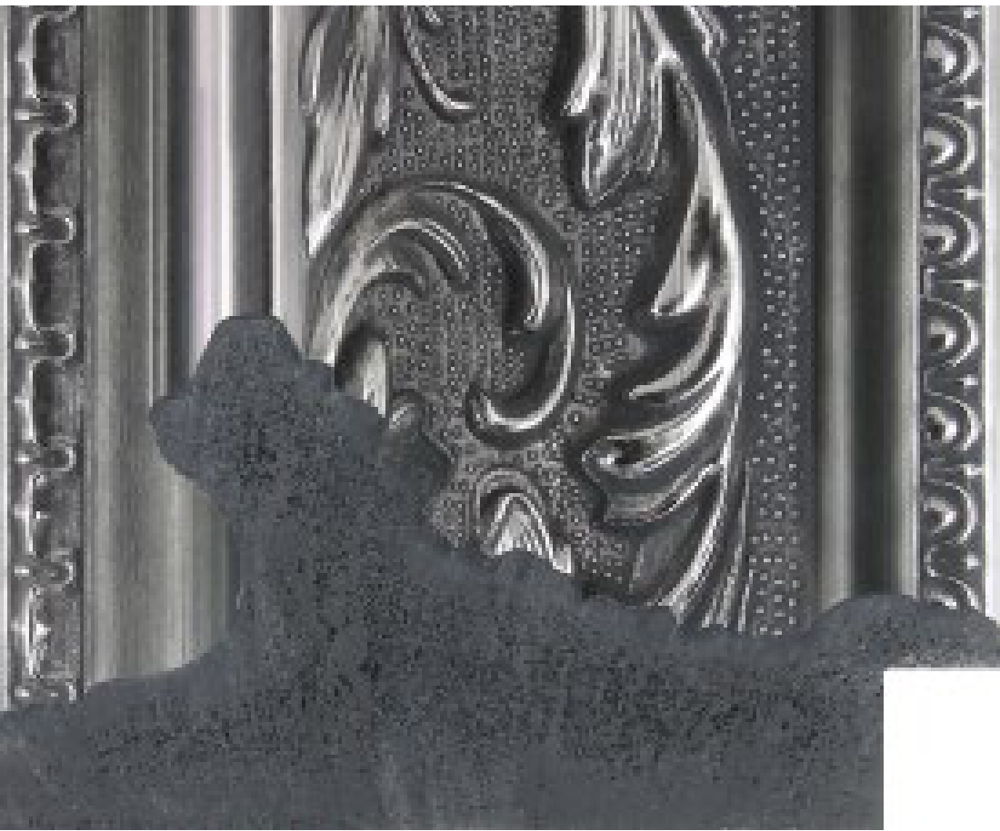
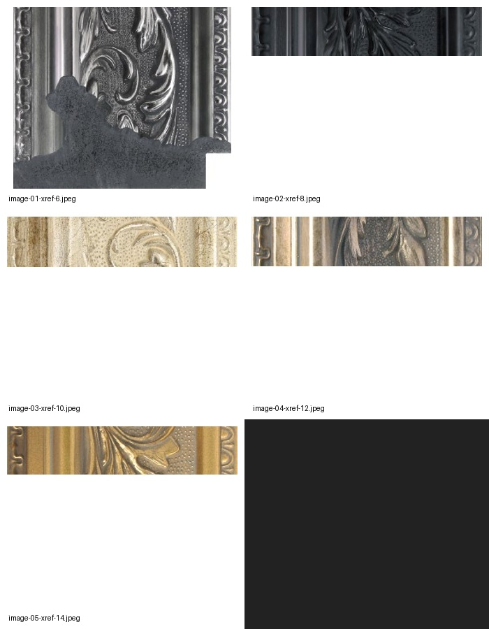

Selected embedded image: profile-native.jpeg, native resolution 275 × 229 px. Five embedded images were found; the tallest image is selected because the PDF dimension graphics span it.
profile-native.jpeg

